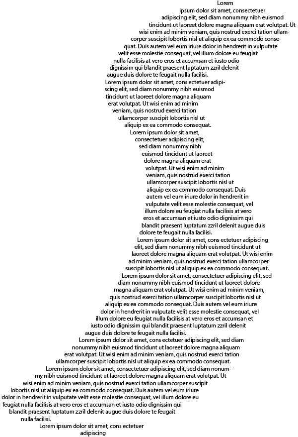
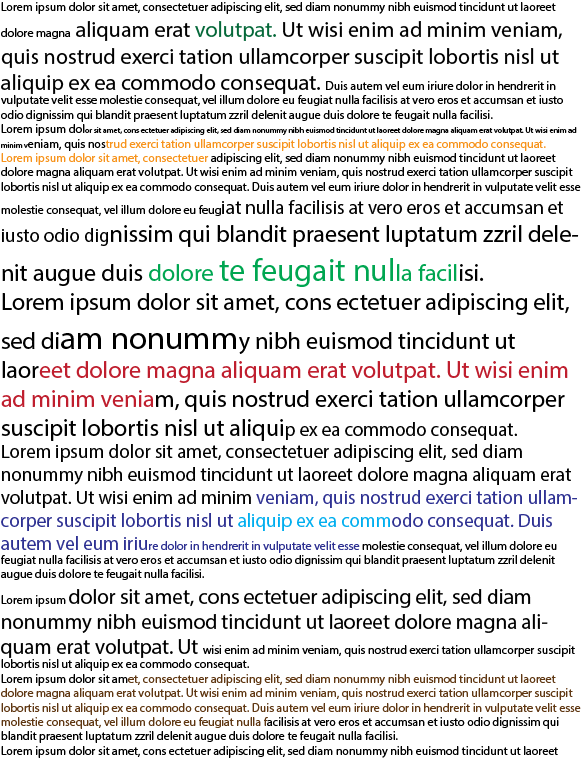
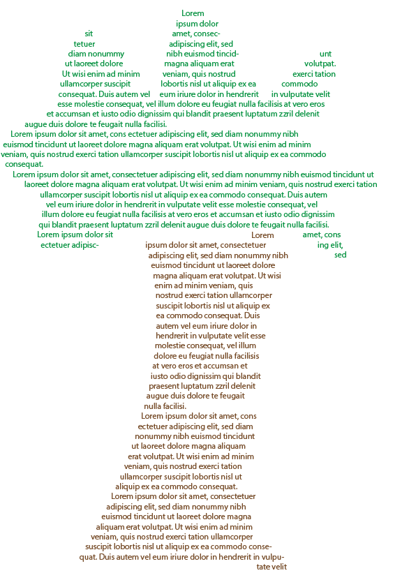

My first idea is to have one really long page with the text shaped like a windy path. I would do this because lots of fairy tales like Hansel and Gretel and the wizard of oz use such a path. I feel like it gives off the vibes of a fairy tale.
Because the story is so descriptive, my second idea is to have another really long page just filled with words. I will adjust the size, boldness, underline, font, and color to reflect what is being said in the story.
My third idea is to have multiple pages, each with text in the color and shape of objects in that part of the text. I feel like this will make the story easier to follow.
